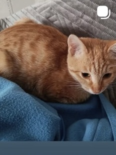
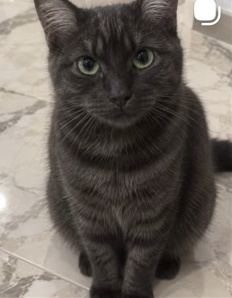
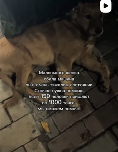
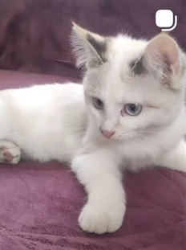

АЛМАТЫ · ПОМОЩЬ ЖИВОТНЫМ
Каждая жизнь заслуживает спасения.
Мы — волонтёры, которые помогают бездомным животным выжить в этом мире. Вместе мы можем дать им шанс на будущее.
Помочь сейчас ↗ Наши подопечные ↓
У каждой жизни есть ценность.20,8 тыс. подписчиков Instagram
499 публикаций
Одна цель помогать животным
Добро начинается с тебя.
Помощь бездомным кошкам и собакам, поддержка лечения и поиск дома. Следите за историями и новостями нашей волонтёрской команды.
Им нужна забота
Истории из предоставленных публикаций. Актуальность сборов уточняйте у волонтёров.

Щенок после ДТП
В публикации сообщалось о тяжёлом состоянии после наезда автомобиля.
Цель публикации: 150 000 ₸Как помочь →
ПОДДЕРЖАТЬ ВОЛОНТЁРОВ
Даже небольшая помощь имеет значение.
Перед переводом проверьте актуальность реквизитов и имя получателя в Instagram фонда.
Уточнить реквизиты ↗Реквизиты из профиля
Kaspi · Мустафа А.
Halyk
Новости и отчётность
Актуальные сведения о помощи и расходах запрашивайте у волонтёров. Подтверждённые отчёты будут добавлены сюда после получения.
Перейти в Instagram ↗